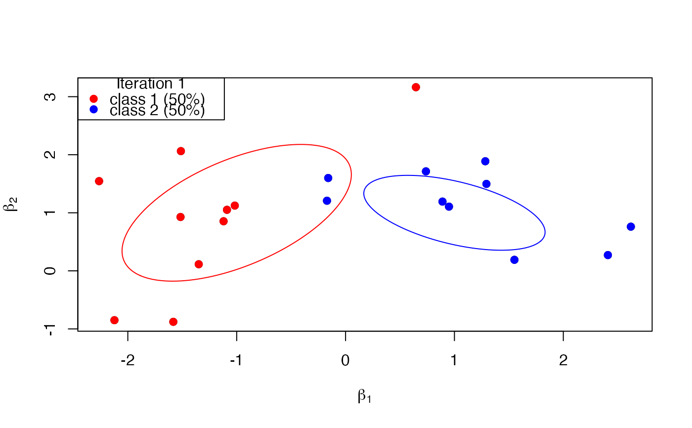

This function plots the allocation of decision-maker specific coefficient vectors
beta given the allocation vector z, the class means b,
and the class covariance matrices Omega.
Arguments
- beta
The matrix of the decision-maker specific coefficient vectors of dimension
P_rxN. Set toNAifP_r = 0.- z
The vector of the allocation variables of length
N. Set toNAifP_r = 0.- b
The matrix of class means as columns of dimension
P_rxC. Set toNAifP_r = 0.- Omega
The matrix of class covariance matrices as columns of dimension
P_r*P_rxC. Set toNAifP_r = 0.- ...
Optional visualization parameters:
colors, a character vector of color specifications,perc, a numeric between 0 and 1 to draw thepercpercentile ellipsoids for the underlying Gaussian distributions (perc = 0.95per default),r, the current iteration number of the Gibbs sampler to be displayed in the legend,sleep, the number of seconds to pause after plotting.
Examples
b <- matrix(c(-1,1,1,1), ncol = 2)
Omega <- matrix(c(0.8,0.5,0.5,1,0.5,-0.2,-0.2,0.3), ncol = 2)
z <- rep(1:2, each = 10)
beta <- sapply(z, function(z) rmvnorm(mu = b[,z], Sigma = matrix(Omega[,z], ncol = 2)))
RprobitB:::plot_class_allocation(beta = beta, z = z, b = b, Omega = Omega,
colors = c("red","blue"), perc = 0.5, r = 1)
